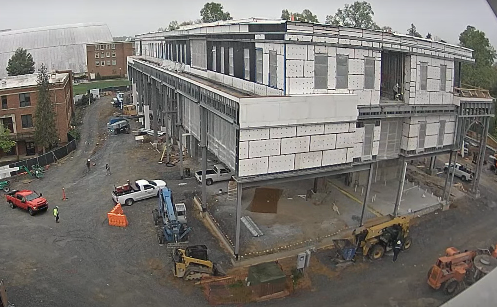
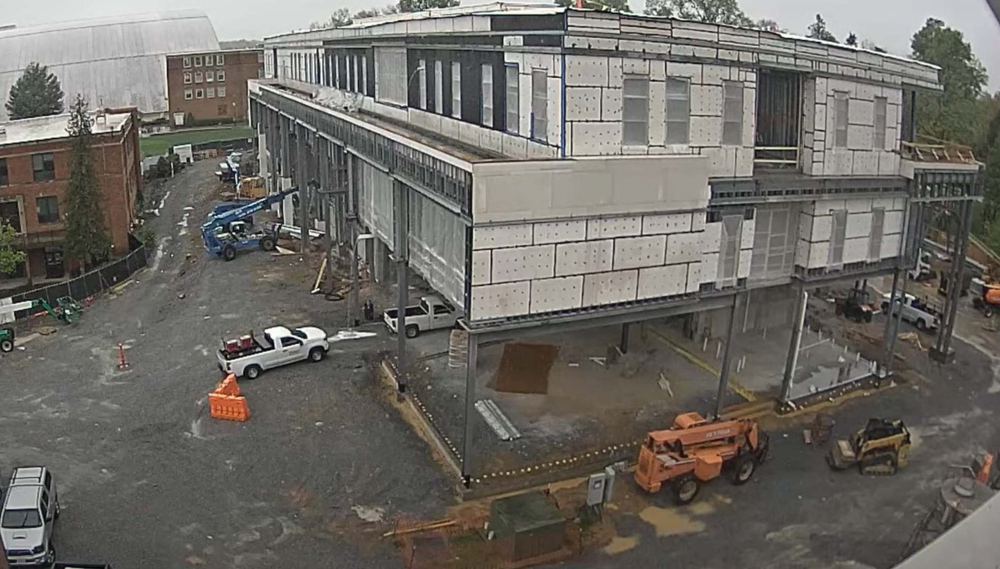
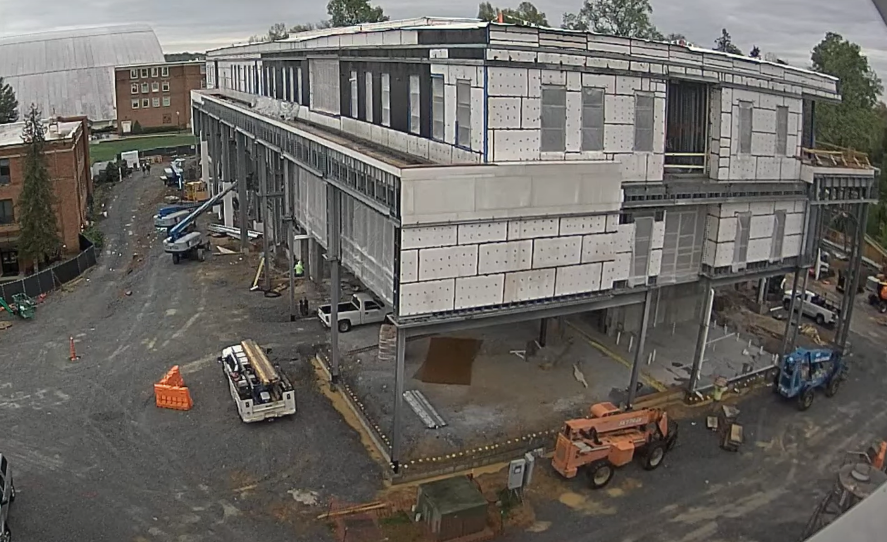

On the third floor near the cut-out, two crew members were attaching what appeared to be a wooden frame. One held the board upright while the other secured it to the floor. Their initial attempt took approximately four minutes but encountered difficulties. The second attempt took two minutes and was successful. After a quick inspection, both crew members left the area at 12:55 PM. Meanwhile, on the second floor above the white trucks, a drainage pipe was seen extending from the floor and discharging water. A smaller pipe on the third floor was also observed draining water from a window area. At 1:00 PM, a steady stream of water began pouring from the second-floor pipe, with the flow gradually slowing by 2:00 PM.
At 1:28 PM, a compact track loader equipped with a fork attachment transported a pallet of materials to the front right side of the building. After placing the pallet, the operator retracted the fork; however, one of the top boards was unintentionally lifted with the forks. The operator then tilted the attachment to drop the board to the ground. The loader drove off and returned to deliver additional materials at 1:29 PM.
At 1:47 PM, a crew member on the first floor was observed taking a phone call, which lasted approximately 12 minutes. At 2:16 PM, another crew member exited the first floor and walked toward the area where the pallet of materials was placed. He briefly stumbled going down, but regained his balance. He then picked up the top board from the pallet and tossed it into the first floor, followed by grabbing a second board and walking around the building to re-enter through a different access point at 2:18 PM. At 2:19 PM, he returned to retrieve the board he had previously thrown over.
